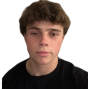
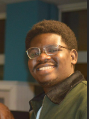
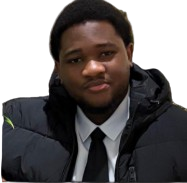

Dans le cadre de nos études et dans le bloc de formation humaines et sociales, il nous a été demandé de faire un travail de recherche sur la cartographie des controverses. Nous nous sommes donc renseigné et nous sommes tombés sur le sujet du café Kopi Luwak et les civettes. Ce sujet nous a beaucoup touché car il traite d'enjeux essentiels.
Notre groupe a donc fonctionné comme une vraie équipe : enquete, tri des informations, selection des sources, conduite d'entretiens, redaction, structuration du site et attention portee a l'experience de lecture.



Nous avons commence par identifier les grands noeuds du sujet : rarete du produit, image de luxe, maltraitance animale, tracabilite et responsabilites partagees.
Les informations ont ete croisees a partir de ressources documentaires, d'articles, de references academiques et surtout d'entretiens qui apportent une matiere plus concrete.
Nous avons ensuite organise le site comme un parcours de lecture, avec des pages qui se completent plutot que de se repeter.
Couleurs, hierarchie des titres, cartes, rythme visuel et navigation ont ete choisis pour rendre l'ensemble plus vivant et plus agreable a parcourir.
Ce site presente une cartographie academique de la controverse. Les temoignages et opinions relayes ici n'ont pas pour but d'imposer une conclusion unique, mais de montrer la pluralite des points de vue et la complexite des enjeux.
Nous remercions les personnes qui ont accepte de partager leur experience, ainsi que toutes les sources qui ont nourri cette realisation.